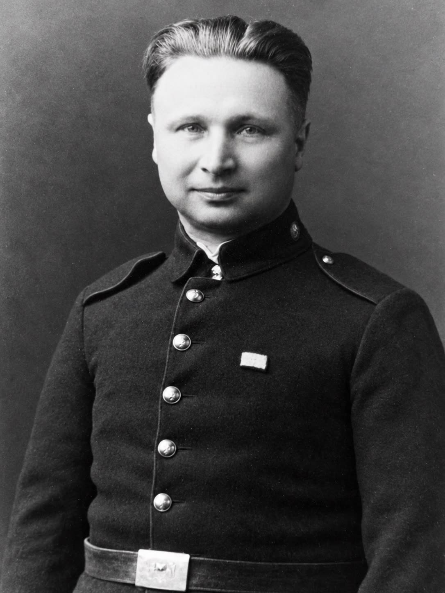
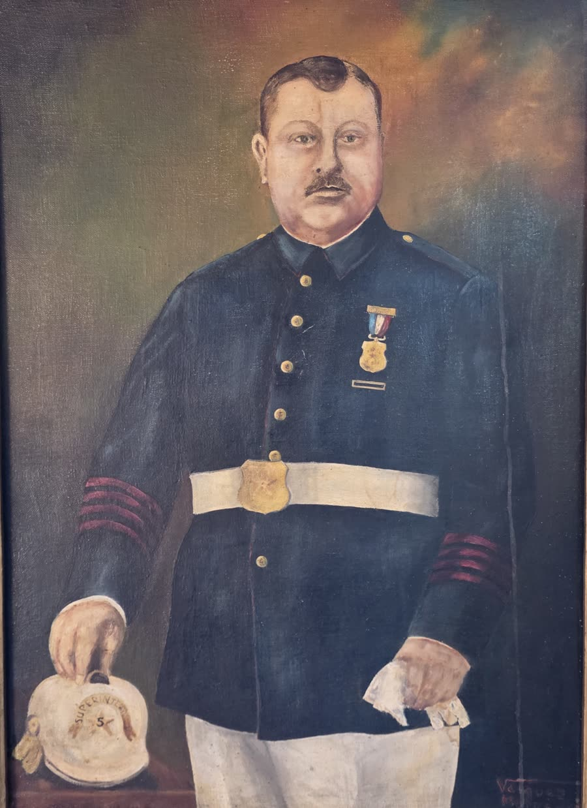

Eugenio Delpín Lepre
Fundador y primer Capitán de la Quinta (1908). Superintendente del Cuerpo de Bomberos de Talcahuano, 1928–1934

Ricardo Setz Schlegel
Fundador y primer Secretario-Tesorero de la Quinta (1908). Miembro Honorario desde el 29 de enero de 1960

Eduardo Schuyler Ziebrecht
Fundador y primer Oficial de Mar de la Quinta (1908). Superintendente del Cuerpo de Bomberos de Talcahuano, 1917–1923, y Superintendente Honorario, 1924–1938